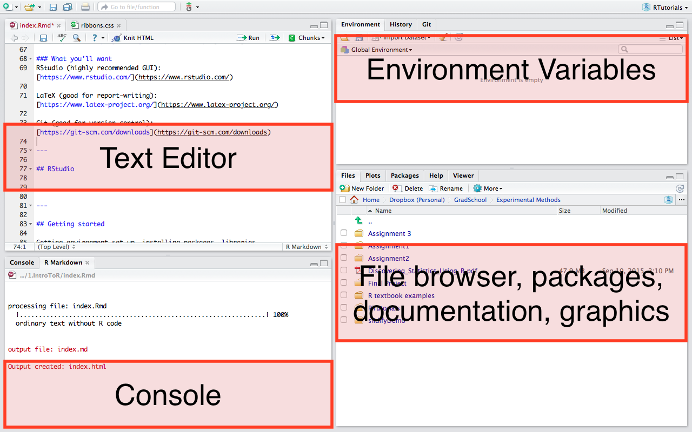

Brief introduction to graphs and ggplot2
hist(mtcars$mpg)

Jenna Blumenthal
MIE 1402
ggplot2)RStudio (highly recommended GUI): https://www.rstudio.com/
LaTeX (good for report-writing): https://www.latex-project.org/
Git (good for version control): https://git-scm.com/downloads

> prompt and R will execute your commandFile --> New | File --> Open --> R ScriptBefore you start being a stats wizard...get organized.
getwd()
You can change the working directory using
setwd("Desktop/ExperimentalMethods/RTutorials")
install.packages("package-name")
library(package-name)
library()
1+1
## [1] 2
a = 4
a
## [1] 4
fruit <- c("apples", "pears", "strawberries")
There are several ways to import data into your R environment:
# Built into R
read.csv()
read.delim()
read.table()
# rio package
library(rio)
import()
# Base datasets (often used in examples)
library(datasets)
mtcars
mtcars
View(mtcars)
head(mtcars)
mtcars[1,]
mtcars[,1]
mtcars$mpg # beacause mtcars is a dataframe!
Sort of like a spreadsheet in Excel, except more fun.
as.data.frame()
as.matrix()
Note, I rarely do this. Likely you will be pulling data from another source.
metallicaNames <- c("Lars", "James", "Kirk", "Rob")
metallicaAges <- c(47, 47, 48, 46)
metallica_data <- data.frame(Name = metallicaNames, Age = metallicaAges)
metallica_data$Age
## [1] 47 47 48 46
mean(metallica_data$Age)
## [1] 47
metallica_data$Age >= 47
## [1] TRUE TRUE TRUE FALSE
older_band_members <- metallica_data[metallica_data$Age >= 47,]
# OR use subset (a bit more intuitive)
older_band_members <- subset(metallica_data, Age >= 47)
If you did some data manipulation and would like to save it as a new file:
write.table()
write.csv(metallica_data, "MetallicaData.csv") # note it will save in your wd
Save the R file, DON'T save the R workspace
Can also make a project - helpful for saving the working directory, dataframes, etc.
ggplot2hist(mtcars$mpg)
plot(mtcars$mpg, mtcars$disp)

install.packages("ggplot2")
library(ggplot2)
## Warning: package 'ggplot2' was built under R version 3.2.4
plot <- ggplot(data = mtcars, aes(mpg, disp))
plot + geom_point()

plot + geom_point() + ggtitle("This is my awesome graph")

Note that the plot object isn't updating unless it is reassigned
Read Ch 4 for some more examples.
Wikipedia: https://en.wikipedia.org/wiki/R_(programming_language))
A (very) short introduction to R: https://cran.r-project.org/doc/contrib/Torfs+Brauer-Short-R-Intro.pdf
Field A, Miles J, Field Z. Discovering Statistics Using R. London: Sage; 2012.
/
#